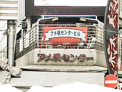

 image: megadem“幼い耳には雑音にしか聴こえない音楽に興味が湧いた”
上野が東京で一番栄えてる街。だって、何でもあるもんなぁ。
大人になったら銀座だよな、スーツ着て、もちろん外車で。
東京に生まれ住んでいながら、渋谷や新宿なんて行った事も無かった。
その地名すら、知ってたのかも怪しい。
銀座には、スーツ着て外車で行かないと駄目だと思ってた。
中学1年当時は本気でそう思ってた。我ながら視野が狭すぎだ。
いや、それでも、周りの奴より広く見ていた方だったと思う。
それだけ幼かったということか。それ以上に、周りの奴はもっと幼かったのか。
今は無くなってるだろうが、当時、アメ横センタービル[1]の2Fだか3Fだったかに、パンク・メタルファッション専門の店[2]があって、仲間と毎週のように通った記憶がある。
当然服や靴も興味があったので買ったりしたが、それ以上にそこで流れてた、当時の幼い耳には雑音にしか聴こえない音楽に興味が湧いた。
それからは、毎週アメ横センタービルに行くが何も買わず、当時の自分達では恐ろしくて買えないだろう「それら」を聴きに行った。
でも何故か店員には「それら」について詳細を訪ねようとはしなかった。
というより、金髪[3]の店員が怖くて話せなかったのか。
その後決まってビルの2F（定かではないが）にあった自動販売機でコーヒーを飲みながら「それら」について仲間と語り合った。知識も無いくせに。
そして、アメ横をぶらぶらして帰る。そんな事が普通に楽しかった。
今ならわかる。一番気に入ってた「それら」は、Iggy Pop & The Stoogesだった。
雑音から名曲に変わるまで、それからさほど時間はかからなかった。
referenced works
- アメ横センタービル：宝石、時計、ブランドバッグから、ゴルフ用品、カメラ用品、そしてアウトドアグッズ、ミリタリーグッズ、さらに生鮮食料品まで、ありとあらゆる専門店が軒を連ねるマーケットビル。戦後の食糧不足に悩む人々の需要と供給が生み出した闇市。それが、アメ横の始まりであり、このビルの根でもある。 ↩
- パンク・メタルファッション専門の店：音楽とファッションの関係性は、とても興味深い。好みの音楽ジャンルから、その音楽を象徴するファッションを身に着けるようになることがある。逆に、好みのファッションのテイストを持つ音楽を聴いてみたところ、その音楽も好みだったということもある。ファッションが象徴する音楽性。音楽とファッションのセンスの一致。となると、昨今の、普段着のようなステージ衣装は、どのような音楽性を象徴しているのだろうか。 ↩
- 金髪：ここで言う金髪とは、黒髪の日本人が、脱色剤やヘアカラー剤を用いて、強制的にブロンドヘアを獲得しようとしたものを指す。金髪獲得後も、時間経過によって頭髪が成長し、時間と金銭に余裕がなければメンテナンスが追いつかず、地肌に近いところが黒々とした層を形成することとなる。 ↩
location information
- 場所: 台東区の上野アメ横センタービル
- 時間: 午前中
- 緯度: 35.709664
- 経度: 139.774466
- 地図: Google Maps
016 “ポツンと東京を見下ろすその姿は気高く、とても真摯だ。”
015 “光に彩られて先輩の横顔が、綺麗に染まる.。”
014 “悲しくて歩けないという気持ちを初めて知った夜”
013 “私たちの声だけが静かに揺れた”
012 “細くぐるりと指を囲む、日焼けをしていない左手の薬指の根元”
011 “涙を流しながら煙を吐く彼の隣”
010 “幼い耳には雑音にしか聴こえない音楽に興味が湧いた”
009 “今年も蕎麦が食べられるなぁ”
008 “お堀に映った月をみんなで見てる”
007 “バッグの中だけがつめたいまま”
006 “ほぼ満員の客がざわざわと寿司を食らっている”
005 “向かい合って、仁王立ち”
004 “なんでもないたった6畳の白い部屋”
003 “昔の彼女がスーツを着てモデルをしてた”
002 “電車が悪いんです”
001 “どこで彼女とセックスをするのかは、東京の子供にとっては問題です”

Write for Us!
広い東京の中に、あなたの思い出を刻んでみませんか？ あの日、あの場所で体験した、あの出来事。あなたにとって忘れられない思い出を、短い物語にして送ってください。
commentary